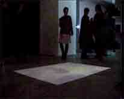

inoutSite
II
 |
 |
|

|
Inoutsite I undII zeigen die Statistik der Raumnutzung. Die roten Pfeile zeigen in die Richtung des Gehens, die Linien sind die Spuren der Menschen im Raum. Die Höhe des Netzes, das wie ein virtuelles Dach über der Beobachtungsfläche schwebt, zeigt die Häufigkeit, mit welcher ein Ort begangen wird.Umso mehr Leute an einem Ort stehen, umso tiefer sinkt das Netz. Die Wolke in der Mitte zeigt dieselbe Information wie das Netz, differenziert nach Intensitätsgraden. Klänge fungieren als "Monitor" der Besucherbewegung: tiefe Töne stehen für Randpositionen, hohe Töne für die Mitte des Raumes.